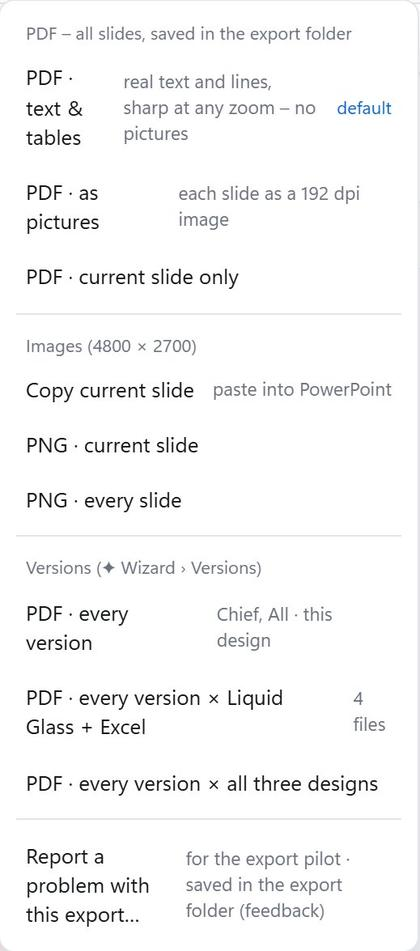

Excel tables in, slides out
- Open a workbook from the shared folder.
- Pick the tables – a wizard does most of it.
- Polish them on the slide, like in Excel.
- Export the deck as a PDF.
- New figures in the workbook? The slides follow.

Slide Builder 42
From the workbook to the deck – together, in minutes.
Switch with one click. Each look keeps its own sizes.

Glass cards and colour capsules on a soft background.

Exactly as the workbook formats it.

Excel's tables, plus text boxes and comments.
The wizard opens by itself the first time you open a workbook.
Tick the sheets you need.
Drag across a table, or take the ones marked with "x".
Put tables on slides; add a cover and an index.
The same deck with some figures hidden, for another audience.


Slide Builder reads the table and writes the analyst's summary – and rewrites it when the figures change.
"Updated by bob just now"
Straight to the shared folder.
Two people, two changes: both stay.
You see who else is in the workbook, and your undo never touches their work.
about 1.3 MB, sharp at any zoom
one PDF each, named for you

Take tables from other workbooks of the folder into the same deck.

One click tells you whether every formula still gives Excel's own result.

Built for our locked-down PCs and our shared folder.
Slide Builder only reads it. Every change is stored beside it.
Runs on our standard PCs with Python, from the shared folder.
Every change is kept until it is safely on the share; backups are automatic.
Questions? The full guide is Slide Builder 4 – guide.pdf, next to this deck. Or ask the maintainer.